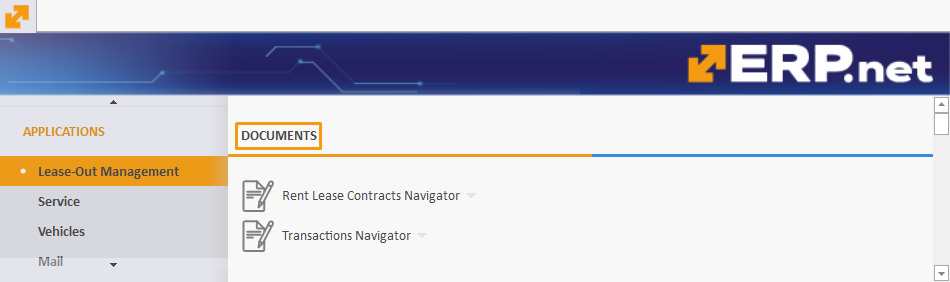
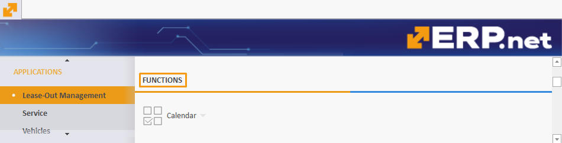

Rental
The Rental section is designed to oversee and control the leasing process of all owned and re-leased assets.
Located in the Applications module, it is divided into various panels, each serving a specific function to ensure effective management of assets, documents, and transactions.
By providing a structured approach as well as the ability to generate detailed reports, Rental offers a comprehensive aid to all rental-related processes and operations.
Note
Rental is referred to as Lease-Out Management in the ERP.net Desktop Client.
For the purposes of this overview, screenshots and references will be used from the Desktop Client.

Types
There are two types of assets which you can create and manage through Rental:
- Rental assets
- Consumables
In the context of a rental asset, a consumable typically refers to items or materials that are used up and need to be replaced regularly as part of the asset's operation or maintenance.
Consumables are tied to a rental asset but are treated as products distinct from it. They are sold and not returned, while the rental asset itself is leased for a specific period of time, and is therefore expected to be returned in reusable condition.
Note
Each rental asset can also be categorized as a Managed Asset.
Documents
The Documents portion of Rental contains all essential transactions and contracts related to the leasing process.
It provides a centralized repository for managing lease agreements and transaction records, ensuring their easy access and organization.
- Lease contract - the main lease document containing the rental asset/s and its consumables, if such are applicable; it also includes the lease time period negotiated for every rental asset
- Transaction (Deliver) - a protocol confirming the handover of the rental asset; it contains the start date of the negotiated lease period
- Transaction (Receive) - a protocol confirming the return of the rental asset; it contains the end date of the negotiated lease period
- Transaction (Write Off Not Returned) - a protocol confirming that the rental asset has not been returned by the leaser
- Transaction (Status Report) - a protocol describing the rental assets handed over to a leaser (can be used for inspection).

Document flow
A typical document flow for leasing out rental assets with consumables goes like this:
Lease Contract --> Transaction (Deliver), Transaction (Receive), Sales Order (Rent), Sales Order (Consumable)
Upon release, the lease contract will lead to the simultaneous generation of a transaction (deliver) protocol, a transaction (receive) protocol, a sales order accounting for the rent, and a sales order accounting for the consumable(s).
Tip
Like all other ERP.net modules, Rental allows you to set up a personalized document flow that meets the individual needs of your business or organization.
Rent Lease Contracts Navigator
This navigator contains all existing lease contract agreements issued for rental assets, including those for consumables, and offers the ability to create new ones.
It is also equipped with a handful of filtering capabilities designed to speed up the process of extracting information in a convenient and systematized way.
Note
When creating a lease contract, you can include as many rental assets in it as needed, and additionally fill out necessary data for each.
Transactions Navigator
Gives access to all protocols following or associated with a lease contract.
Like the Lease Contracts Navigator, it includes useful filtering capabilities through which you can quickly and easily summarize protocol data in a convenient format.
Functions
This section includes tools that facilitate the day-to-day management of lease activities.
It offers functionalities that help you stay on track with key dates and schedules.

Calendar
The Calendar provides a quick overview of all rental assets' occupancy, showing you the customers to which they were leased, from when they have been leased and until when. It lets you know when they will be free to lease again, including the periods when they will not be leased.
Reports
Rental allows you to generate comprehensive reports summarizing your leasing activities.
These include monitoring the status of assets, tracking lease contract details, and reviewing transaction history.

Assets status report
Provides a comprehensive overview of the current status of all assets, revealing their current availability/occupancy.
Lease Contracts – Lines
Breaks down each lease contract into its lines, giving insights into contract terms and conditions.
Transactions – Lines
Contains detailed records of all transactions, ensuring transparency and accountability in rental asset management.
Lease Contracts - Lines – Consumables
Focuses on the consumables purchased with rental assets.
Definitions
The Definitions portion of Rental provides detailed information about all rentable assets, their classifications and consumables.
It's here, for instance, that you can add new asset types and groups necessary for the creation of the rental asset itself.
Note
Certain definitions can also be created during the process of filling out the lease contract.
All the information you provide for a rental asset in advance of creating a lease contract will be automatically added in that contract's lines when you select the respective rental asset.

Rental Assets
This is where rental assets are created and stored. Each has a code and a name and must first be defined a group with a type.
It is necessary to associate it with an existing sales product for which a sales order will later be issued.
You can also specify additional information for the rental asset, including tying it to a fixed asset.
Asset Types
Defines the various rental asset types which need to be tied to a rental asset group.
Asset Groups
Categorizes rental assets into hierarchies of larger groups.
Assets – Consumables
This is where consumables are created and information for existing ones can be previewed.
Each consumable has a code and a name and must be defined a product with a certain quantity.
One or more quantities of a particular consumable are always tied to one rental asset a time.
Asset Types – Consumables
Defines the different types of consumable items related to rental assets.
Settings
The Settings portion of Rental allows you to define or change individual properties and attributes of various asset types.
This includes different user characteristics and ensures a more custom approach to how you structure your rental assets.